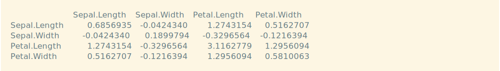
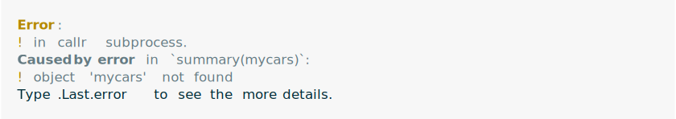
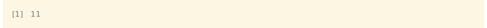
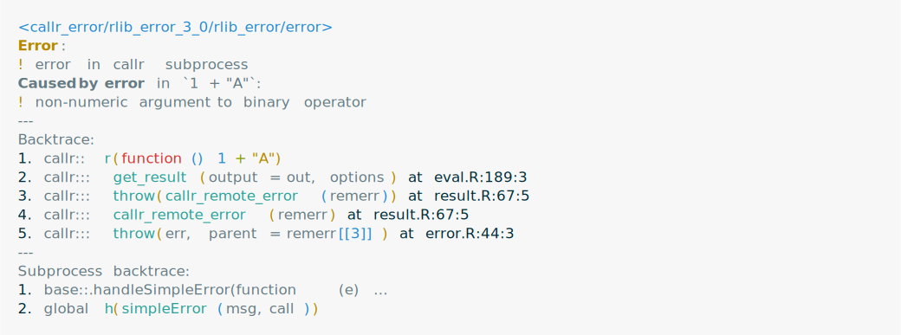
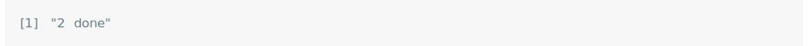
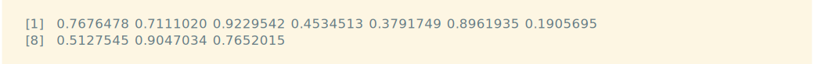
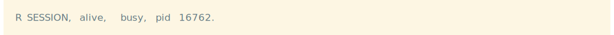
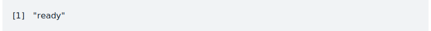
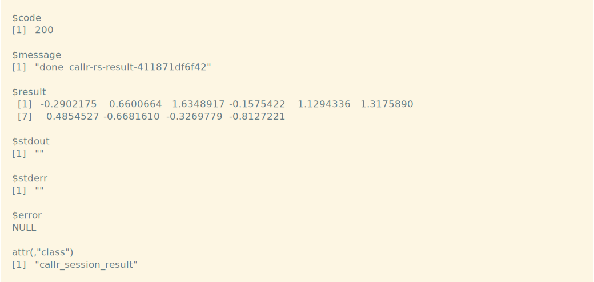
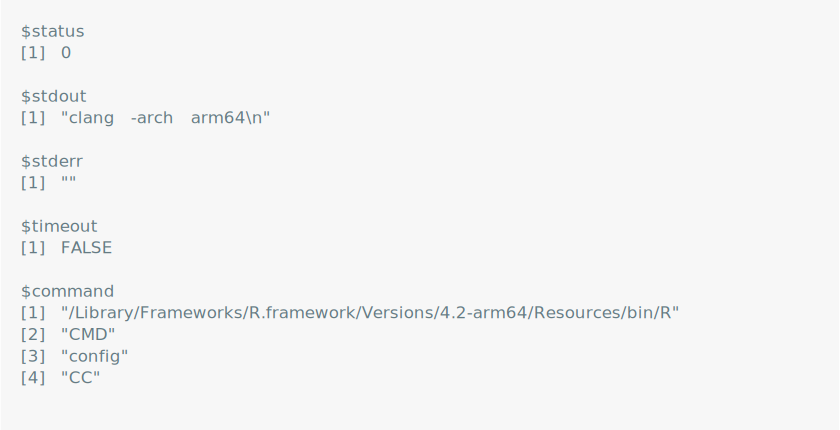

Function reference
-
callr-package Features
Calls an R function, with arguments, in a subprocess.
Copies function arguments to the subprocess and copies the return value of the function back, seamlessly.
Copies error objects back from the subprocess, including a stack trace.
Shows and/or collects the standard output and standard error of the subprocess.
Supports both one-off and persistent R subprocesses.
Calls the function synchronously or asynchronously (in the background).
Can call
R CMDcommands, synchronously or asynchronously.Can call R scripts, synchronously or asynchronously.
Provides extensible
r_process,rcmd_processandrscript_processR6 classes, based onprocessx::process.
Synchronous, one-off R processes
Use
r()to run an R function in a new R process. The results are passed back seamlessly:callr::r(function() var(iris[, 1:4]))
Passing arguments
You can pass arguments to the function by setting
argsto the list of arguments. This is often necessary as these arguments are explicitly copied to the child process, whereas the evaluated function cannot refer to variables in the parent. For example, the following does not work:mycars <- cars callr::r(function() summary(mycars))
But this does:
mycars <- cars callr::r(function(x) summary(x), args = list(mycars))
Note that the arguments will be serialized and saved to a file, so if they are large R objects, it might take a long time for the child process to start up.
Using packages
You can use any R package in the child process, just make sure to refer to it explicitly with the
::operator. For example, the following code creates an igraph graph in the child, and calculates some metrics of it.callr::r(function() { g <- igraph::sample_gnp(1000, 4/1000); igraph::diameter(g) })
Error handling
callr copies errors from the child process back to the main R session:
callr::r(function() 1 + "A") callr sets the
callr sets the .Last.errorvariable, and after an error you can inspect this for more details about the error, including stack traces both from the main R process and the subprocess..Last.error
The error objects has two parts. The first belongs to the main process, and the second belongs to the subprocess.
.Last.erroralso includes a stack trace, that includes both the main R process and the subprocess:The top part of the trace contains the frames in the main process, and the bottom part contains the frames in the subprocess, starting with the anonymous function.
Standard output and error
By default, the standard output and error of the child is lost, but you can request callr to redirect them to files, and then inspect the files in the parent:
x <- callr::r(function() { print("hello world!"); message("hello again!") }, stdout = "/tmp/out", stderr = "/tmp/err" ) readLines("/tmp/out")
readLines("/tmp/err")
With the
stdoutoption, the standard output is collected and can be examined once the child process finished. Theshow = TRUEoptions will also show the output of the child, as it is printed, on the console of the parent.Background R processes
r_bg()is similar tor()but it starts the R process in the background. It returns anr_processR6 object, that provides a rich API:rp <- callr::r_bg(function() Sys.sleep(.2)) rp
This is a list of all
r_processmethods:ls(rp)
These include all methods of the
processx::processsuperclass and the newget_result()method, to retrieve the R object returned by the function call. Some of the handiest methods are:get_exit_status()to query the exit status of a finished process.get_result()to collect the return value of the R function call.interrupt()to send an interrupt to the process. This is equivalent to aCTRL+Ckey press, and the R process might ignore it.is_alive()to check if the process is alive.kill()to terminate the process.poll_io()to wait for any standard output, standard error, or the completion of the process, with a timeout.read_*()to read the standard output or error.suspend()andresume()to stop and continue a process.wait()to wait for the completion of the process, with a timeout.
Multiple background R processes and
poll()Multiple background R processes are best managed with the
processx::poll()function that waits for events (standard output/error or termination) from multiple processes. It returns as soon as one process has generated an event, or if its timeout has expired. The timeout is in milliseconds.rp1 <- callr::r_bg(function() { Sys.sleep(1/2); "1 done" }) rp2 <- callr::r_bg(function() { Sys.sleep(1/1000); "2 done" }) processx::poll(list(rp1, rp2), 1000)
rp2$get_result()
processx::poll(list(rp1), 1000)
rp1$get_result()Persistent R sessions
r_sessionis anotherprocessx::processsubclass that represents a persistent background R session:rs <- callr::r_session$new() rsr_session$run()is a synchronous call, that works similarly tor(), but uses the persistent session.r_session$call()starts the function call and returns immediately. Ther_session$poll_process()method orprocessx::poll()can then be used to wait for the completion or other events from one or more R sessions, R processes or otherprocessx::processobjects.Once an R session is done with an asynchronous computation, its
poll_process()method returns"ready"and ther_session$read()method can read out the result.rs <- callr::r_session$new() rs$run(function() runif(10))
rs$call(function() rnorm(10)) rs
rs$poll_process(2000)
rs$read()
Running
R CMDcommandsThe
rcmd()function calls anR CMDcommand. For example, you can callR CMD INSTALL,R CMD checkorR CMD configthis way:callr::rcmd("config", "CC")
This returns a list with three components: the standard output, the standard error, and the exit (status) code of the
R CMDcommand.Code of Conduct
Please note that the callr project is released with a Contributor Code of Conduct. By contributing to this project, you agree to abide by its terms.
-
r_copycat() - Run an R process that mimics the current R process
-
r_vanilla() - Run an R child process, with no configuration
-
r_bg() - Evaluate an expression in another R session, in the background
-
r_process - External R Process
-
r_process_options() - Create options for an r_process object
-
r_session - External R Session
-
r_session_options() - Create options for an r_session object
-
r_session_debug - Interactive debugging of persistent R sessions
-
rcmd()rcmd_safe() - Run an
R CMDcommand
-
rcmd_copycat() - Call and
R CMDcommand, while mimicking the current R session
-
rcmd_safe_env() rcmd_safe_envreturns a set of environment variables that are more appropriate forrcmd_safe(). It is exported to allow manipulating these variables (e.g. add an extra one), before passing them to thercmd()functions.
-
rcmd_bg() - Run an
R CMDcommand in the background
-
rcmd_process - External
R CMDProcess
-
rcmd_process_options() - Create options for an rcmd_process object
-
rscript() - Run an R script
-
rscript_process - External
Rscriptprocess
-
rscript_process_options() - Create options for an rscript_process object
-
default_repos() - Default value for the
reposoption in callr subprocesses
-
supported_archs() - Find supported sub-architectures for the current R installation
-
reexports - Objects exported from other packages